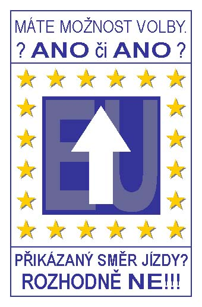

|  |
Dlouhá
léta nevíme o EU vùbec nic.
A najednou ("èirou náhodou" zrovna pùl roku pøed referendem o
našem vstupu) je všude kolem nás plno pozitivních plakátu,
pochvalnıch èlánkù, šastnıch obrázkù, vstøícnıch úsmìvu,
slibù a všech dalších propagandistickıch lí. Copak se tam mají opravdu tak
dobøe? A my se budeme mít ještì líp, a místo koruny bude tEURO?
Nepøísluší nám hodnotit, kdy nic nevíme. Neøíkáme NE Evropské unii.
Øíkáme NE tomu svinstvu, kterım nás za NAŠE peníze krmí NAŠE
drahá vláda.
KRVIK TOTR
Souhlasíš? Pošli dál.
Nesouhlasíš? Zaøaï se! |